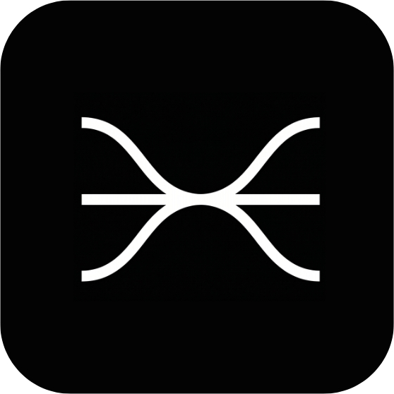

Nuestra herramienta ODAS es un software para el comercio alimentario español que predice qué vas a vender, reduce el desperdicio y deja la Ley 1/2025 documentada sin esfuerzo.

Solicita una DemoRecomendación
Croissants de mantequilla (pack 6)
Lote L26061402 · Panadería y Pastelería
18 uds disponibles
4,50 € 1,99 €/uds
Panadería San Antonio · Sevilla
Cadena de trazabilidad · SHA-256
Recepción
c11c9d80…7d1247
Almacenaje
3343e325…d2c7a8
Venta / Donación
c23534d8…3c6fd8
Registro Ley 1/2025 · sellado
6152263e…0bd85d
Para el retail y la distribución
ODAS te ayuda a predecir la demanda de tus productos y distribuir tus excedentes para que puedas cumplir la Ley 1/2025 sin fricción operativa y recuperar margen antes de que llegue a la basura.
1k+
Predicciones por día
40%
Menos de desperdicio
6
Canales de distribución
Predicción de demanda — próximos 7 días
Total previsto
239,8
Media diaria
34,3
Stock actual
120
Error modelo
25.0%
€500K
en ahorro en multas.
10 min
Creación del Plan de prevención gratis.
99.9%
en la ejecución del plan.
Comercios y cadenas pequeñas que necesitan cumplir y empezar a prevenir.
Cadenas medianas multi-tienda que quieren optimización, cumplir la ley y vender en el marketplace.
![[[EDITAR: alt noticia 1]]](https://media3.giphy.com/media/v1.Y2lkPTc5MGI3NjExbGRuNWJncm4ybzZlZzE0M2FoaGR2cnpxZmphN2c2NjZpaGN6OG96bCZlcD12MV9pbnRlcm5hbF9naWZfYnlfaWQmY3Q9Zw/VbEuHLBUPQm55MyqJg/giphy.gif)
![[[EDITAR: alt noticia 2]]](https://media1.giphy.com/media/v1.Y2lkPTc5MGI3NjExMmhnbGV0bzJwNmF5bzZ3MWx5c2lxcmVmeG1qZDJjdndhZWNraWkwaiZlcD12MV9pbnRlcm5hbF9naWZfYnlfaWQmY3Q9Zw/NNVWeKWyh2p026Or91/giphy.gif)
![[[EDITAR: alt noticia 3]]](https://media2.giphy.com/media/v1.Y2lkPTc5MGI3NjExdmJsdmU5bHFyY3l2cHY3amkxNmo1MW9xeTAyemhiOHJxajh5cHgydyZlcD12MV9pbnRlcm5hbF9naWZfYnlfaWQmY3Q9Zw/ch2JlGY6dlb2yp7jU3/giphy.gif)
![[[EDITAR: alt noticia 4]]](https://media4.giphy.com/media/v1.Y2lkPTc5MGI3NjExM3UzanRqMGptOTcweDF3OWkzZzNkZjBoNXhkeXc2dXVpZnN2cnR6MCZlcD12MV9pbnRlcm5hbF9naWZfYnlfaWQmY3Q9Zw/55PkuDHvG7u36/giphy.gif)